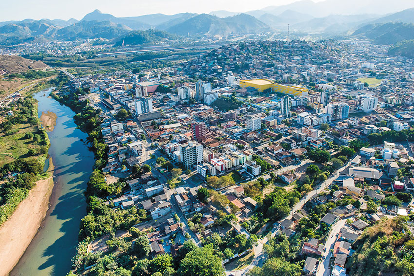
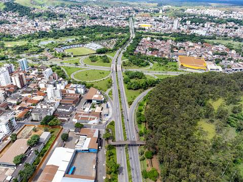

Cidades em Destaque
Coronel Fabriciano
Preserva tradições culturais e atrativos naturais, como a Serra do Cocais.
Ipatinga
Oferece atrativos recreativos, como o Parque Ipanema e o Centro Cultural Usiminas.
Timóteo

Destaca-se por seu patrimônio cultural e ambiental, incluindo o Parque Estadual do Rio Doce.